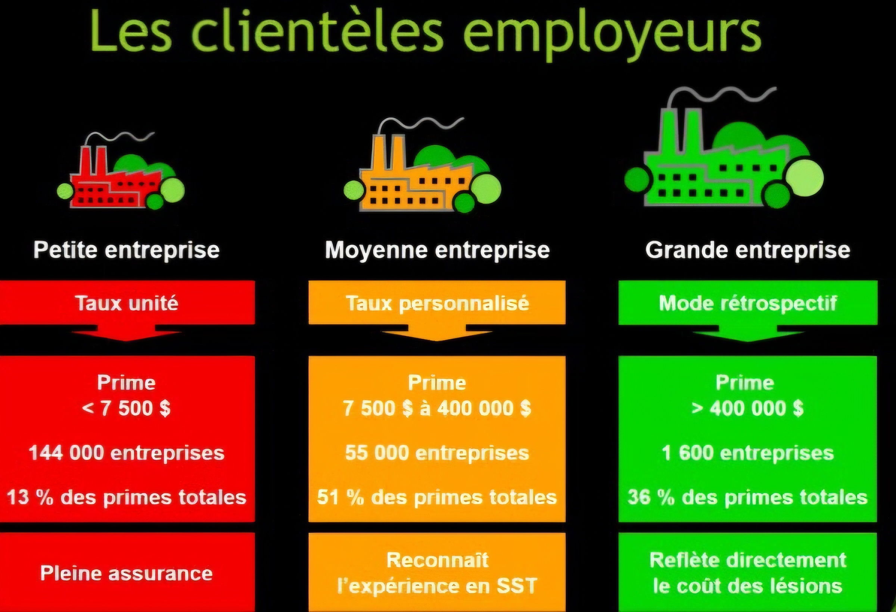
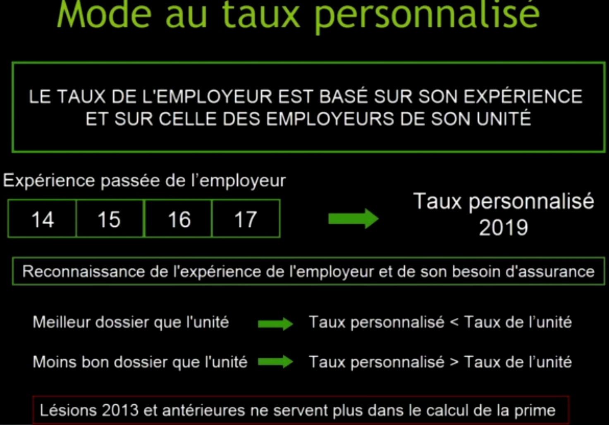
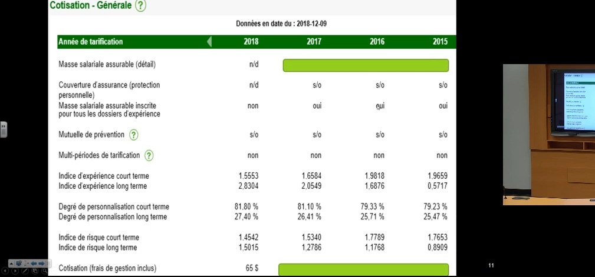
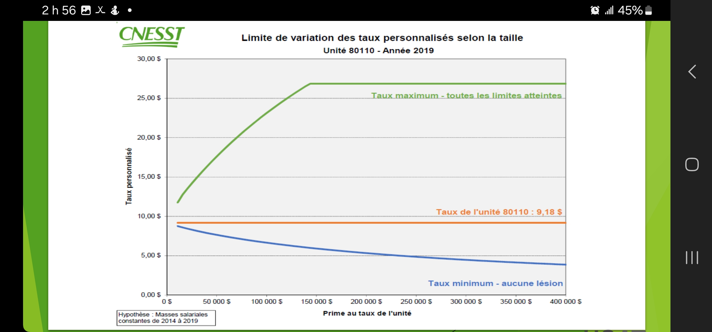
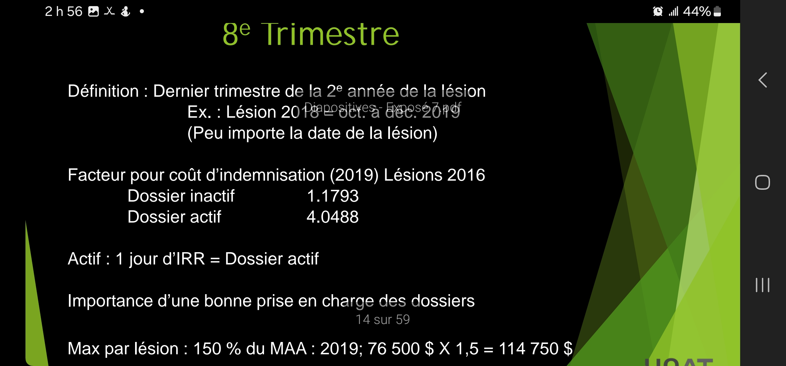
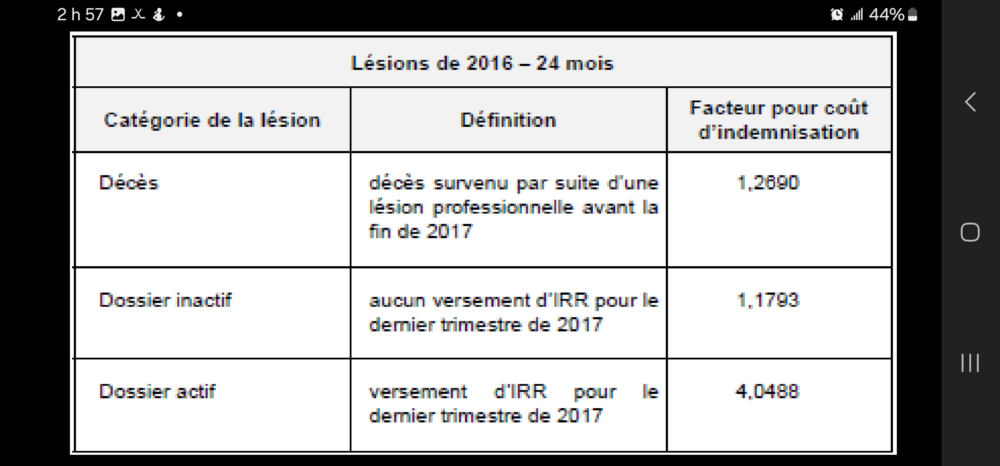
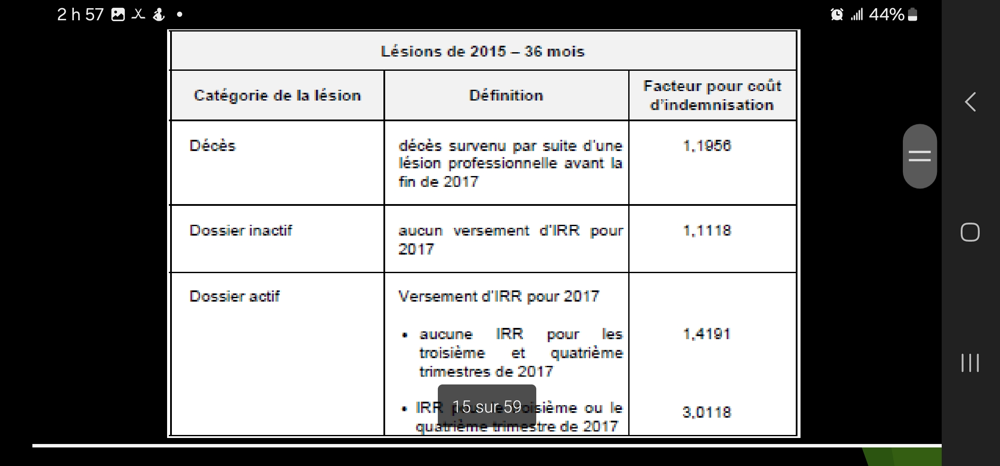
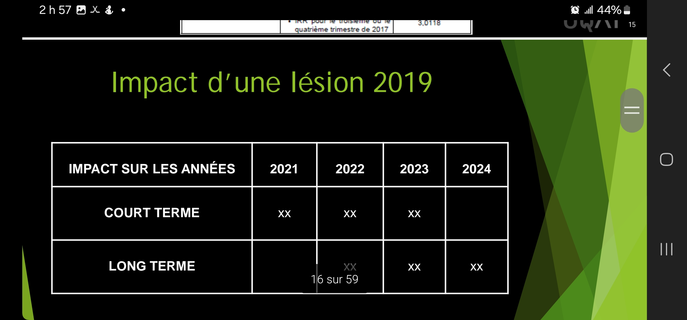
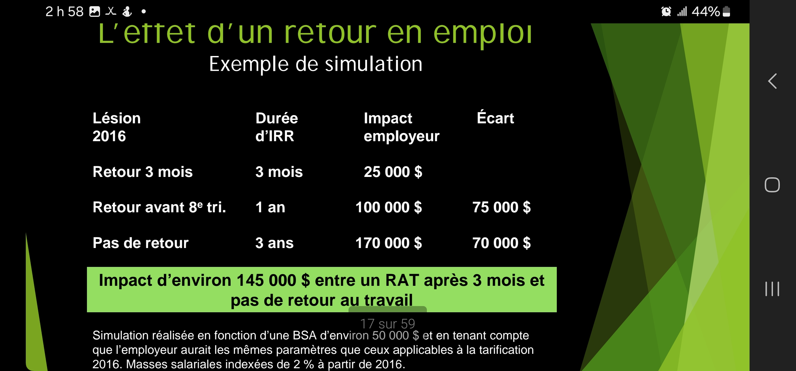

Cotisations et financement CNESST
Le régime québécois d'indemnisation des lésions professionnelles est entièrement financé par les employeurs via leurs cotisations à la CNESST. Chaque employeur est classé dans une ou plusieurs unités selon ses activités (LATMP art. 297 à 300). Sa cotisation est calculée en multipliant un taux par la masse salariale assurable (MSA), avec un mode de tarification qui dépend de la taille de l'entreprise : régime de l'unité (petite), personnalisé (moyenne), rétrospectif (grande). Plus l'entreprise est grande, plus sa cotisation reflète sa propre expérience en lésions professionnelles. L'imputation individuelle (art. 326) peut être transférée à toutes les unités dans certaines circonstances. Les mutuelles de prévention offrent un quatrième mécanisme de mutualisation entre employeurs engagés.
Table des matières
- Cadre légal
- Rôle de la CNESST
- Obligations déclaratives de l'employeur
- Classification et unités
- Notions clés, MAA et MSA
- Calcul de la cotisation
- Les trois régimes de tarification
- Régime de l'unité
- Régime personnalisé
- Régime rétrospectif
- Imputation des coûts
- Transfert d'imputation
- Négligence grossière et volontaire
- Mutuelles de prévention
- Levier prévention et gestion des lésions
- Application terrain
- Ressources
Cadre légal
- LATMP art. 27 : négligence grossière et volontaire.
- LATMP art. 284.1 et 284.2 : conditions d'admissibilité aux mutuelles.
- LATMP art. 290 : déclaration de début d'activités.
- LATMP art. 291 : déclaration des salaires bruts.
- LATMP art. 296 : tenue des registres.
- LATMP art. 297 à 300 : classification dans les unités.
- LATMP art. 304 à 314.4 : fixation et perception de la cotisation.
- LATMP art. 308 : paiement rétroactif et intérêts en cas d'omission.
- LATMP art. 326 : principe d'imputation individuelle.
- LATMP art. 327 : répartition à toutes les unités.
- LATMP art. 328 : maladies professionnelles.
- LATMP art. 329 : travailleur déjà handicapé.
- Règlement sur le financement.
- Règlement sur les mutuelles de prévention.
Rôle de la CNESST
Assureur public couvrant l'ensemble des travailleurs québécois. Mandats
- promotion de la santé et de la sécurité ;
- élimination des dangers au travail ;
- inspection des milieux de travail (voir LSST, programmes et inspecteur) ;
- indemnisation des travailleurs accidentés ;
- acquittement des frais médicaux et facilitation du retour au travail.
Obligations déclaratives de l'employeur
| Obligation | Article |
|---|---|
| Déclaration de début d'activités | art-290-LATMP : production preuves |
| Déclaration des salaires bruts | art-291-LATMP : enquête médicale ; Règlement sur le financement art-21-LATMP : modalités et montant de l'inscription-22 |
| Tenue de registres (activités, masse salariale) | art-296-LATMP : décision CNESST |
| Paiement rétroactif + intérêts en cas d'omission | art-308-LATMP : décision finale |
Classification et unités
L'art. 297 LATMP prévoit que la CNESST détermine annuellement les unités de classification regroupées en secteurs. Chaque employeur est classé selon ses activités. Un taux personnalisé est fixé pour chaque unité, en fonction d'une expertise actuarielle tenant compte des coûts des accidents passés.
L'art. 304 LATMP prévoit que la décision de fixation de la cotisation est notifiée et peut être contestée.
Notions clés, MAA et MSA
| Notion | Définition |
|---|---|
| MAA (Maximum annuel assurable) | Salaire brut maximum sur lequel sont calculés cotisation et Indemnités de remplacement du revenu (IRR). Fixé annuellement. Référence donnée : 88 000 $ en 2022 ; 76 500 $ en 2019. Vérifier l'année courante. |
| Masse salariale totale | Somme des salaires bruts annuels versés. |
| MSA (Masse salariale assurable) | Somme des portions de salaires inférieures ou égales au MAA. Un employé à 100 000 $ ne compte que pour 88 000 $ en 2022. |
Calcul de la cotisation
Formule générale
Cotisation = Taux de l'unité × Masse salariale assurable (MSA)
Le taux peut varier selon le régime applicable : régime de l'unité (petite entreprise), personnalisé (moyenne), rétrospectif (grande).
Les trois régimes de tarification
Le tableau suivant donne une vue d'ensemble des trois clientèles d'employeurs et de leurs régimes

Toucher l'image pour l'agrandir| Régime | Cible | Principe |
|---|---|---|
| Unité | Petite entreprise (~ < 7 500 $ de primes) | Taux du secteur, pleine assurance |
| Personnalisé | Moyenne entreprise | Taux ajusté selon expérience individuelle |
| Rétrospectif | Grande entreprise (~ > 400 000 $) | Coûts réels avec franchise par lésion |
Régime de l'unité
Petites entreprises (moins de 7 500 $ de primes annuelles environ).
- Paie le taux du secteur d'activité × MSA, sans responsabilisation pour les lésions.
- Principe de pleine assurance.
- Période de référence indicative : pour la prime 2022, données 2017-2020 (4 ans).
Régime personnalisé
Moyennes entreprises. Le taux varie selon les efforts en prévention et la performance en lésions professionnelles. Le schéma suivant illustre comment l'expérience de l'employeur influence le taux

Toucher l'image pour l'agrandirIndice d'expérience
- Tous les coûts imputés à l'employeur, plus une estimation des coûts futurs.
- Limite (plafond) par réclamation.
- Plus l'entreprise est grande, plus son expérience pèse dans la détermination du taux.
Court terme vs long terme
| Indice | Représente | Poids approximatif |
|---|---|---|
| Court terme | Fréquence des lésions | 20 % |
| Long terme | Gravité (coûts élevés) | 80 % |
Indice de risque : < 1 = moins à risque que la moyenne ; > 1 = plus à risque.
Les années de référence utilisées pour la tarification suivent une logique pluriannuelle. Exemple pour 2019
Toucher l'image pour l'agrandirLa structure de la cotisation combine les indices à des degrés de personnalisation différents

Toucher l'image pour l'agrandirLa variation des taux personnalisés est plafonnée selon la taille de l'employeur

Toucher l'image pour l'agrandir8e trimestre : dernier trimestre de la 2e année de la lésion. Coût d'indemnisation amplifié si le dossier reste actif (référence indicative : en 2019, dossier actif sur lésion 2016, facteur 4,0488 ; dossier inactif, 1,1793). Max par lésion = 150 % du MAA. Cela souligne l'importance de la prise en charge précoce.
Les facteurs appliqués au coût d'indemnisation par cohorte de lésions illustrent l'effet du suivi

Toucher l'image pour l'agrandir
Toucher l'image pour l'agrandir
Toucher l'image pour l'agrandirL'impact d'une nouvelle lésion s'étale sur plusieurs années de cotisation

Toucher l'image pour l'agrandirInversement, un retour en emploi rapide réduit significativement la facture

Toucher l'image pour l'agrandirRégime rétrospectif
Très grandes entreprises (plus de 400 000 $ de primes annuelles). La cotisation reflète directement les coûts réels des lésions.
- Cotisation initiale au taux personnalisé.
- Choix d'une limite (franchise) par lésion : de 1,5 à 9 fois le MAA.
- Ajustements de la cotisation selon l'évolution sur 4 ans des lésions
- 1er réajustement provisoire après 24 mois ;
- 2e (sur demande) après 36 mois ;
- ajustement final après 48 mois.
Compromis franchise / coût d'assurance
| Limite par lésion | Coût direct assumé | Cotisation CNESST, rôles et pouvoirs |
|---|---|---|
| Basse | Faible | Plus élevée |
| Élevée | Important | Plus faible |
Imputation des coûts
L'art. 326 LATMP énonce le principe : la CNESST impute à l'employeur le coût des prestations dues en raison d'un accident du travail survenu à un travailleur à son emploi.
| Situation particulière | Article |
|---|---|
| Maladies professionnelles en mine : imputation proportionnelle entre employeurs selon durée d'emploi et niveau de danger | art-328-LATMP : imputation maladie |
| Travailleur déjà handicapé : partage des coûts selon condition personnelle | art-329-LATMP : transfert imputation |
| Répartition à toutes les unités | art-327-LATMP : partage imputation |
Transfert d'imputation
L'art. 326 al. 2 LATMP permet à l'employeur de demander le transfert des coûts à toutes les unités lorsque l'imputation à son seul dossier serait injuste. Conditions à démontrer
- accident attribuable majoritairement à un tiers (art. 27) ;
- caractère injuste de l'imputation.
Notion de tiers (Ministère des Transports c. CSST, [2007] C.L.P. 1804) : toute personne autre que le travailleur lésé, son employeur et les autres travailleurs exécutant un travail pour ce dernier.
Notion d'injustice : appréciée au regard des risques particuliers liés à la nature des activités de l'employeur. Des circonstances inhabituelles qui ne reflètent pas les risques normaux de l'entreprise peuvent justifier le transfert (Collège Mont-Sacré-Cœur de Granby, CLP 578832).
Négligence grossière et volontaire
Depuis le 6 octobre 2021, les coûts liés à une lésion résultant de la négligence grossière et volontaire du travailleur (art. 27) qui entraîne une atteinte permanente grave ou un décès ne sont plus imputés à l'employeur. Ils sont répartis entre tous les employeurs. Objectif : éviter qu'un seul employeur ne supporte un fardeau important causé par la faute de son employé.
Mutuelles de prévention
Regroupements d'employeurs engagés en prévention, Droit à la réadaptation et retour au travail. Permettent d'obtenir des rabais sur les primes selon la performance collective.
Exigences pour adhérer
- avoir un programme de prévention (voir LSST, droits et obligations) ;
- être en règle avec la Commission ;
- impliquer les travailleurs.
Levier prévention et gestion des lésions
Dans tous les régimes, une bonne gestion réduit les coûts
- offrir des assignations temporaires (voir Droit à la réadaptation) ;
- réintégration et adaptation des postes ;
- programmes de prévention (LSST art. 58 à 61) ;
- culture d'entreprise favorisant le retour au travail.
Application terrain
Particularités du secteur minier
| Enjeu | Implication financement / imputation |
|---|---|
| Mines moyennes et grandes en régime personnalisé ou rétrospectif | L'expérience individuelle pèse lourd. Chaque lésion lourde se ressent pendant plusieurs années. |
| Cycles de prix des Métaux toxiques en milieu de travail | Les variations de masse salariale (embauches / mises à pied) peuvent modifier le régime applicable. |
| Mutuelle de prévention APSM | Regroupe plusieurs employeurs miniers. Adhésion conditionnelle à un programme de prévention conforme. La performance du groupe influence le taux. |
| Maladies pulmonaires longue latence (silicose, amiantose) | Application art-328-LATMP : imputation maladie : répartition proportionnelle entre les employeurs ayant exposé le travailleur. Documentation des expositions historiques cruciale. |
| Sous-traitance et donneur d'ouvrage | Si le sous-traitant a le statut d'employeur, l'imputation suit son dossier. Le donneur peut être impliqué comme tiers (art-27-LATMP : exclusion : négligence grossière et volontaire) selon les circonstances. |
| Accident causé par un tiers (camion d'un autre employeur sur site partagé) | Demande de transfert d'imputation art-326-LATMP : imputation employeur al. 2 envisageable. |
| Travailleurs miniers ayant œuvré chez plusieurs employeurs | Reconstitution de l'historique d'exposition pour l'imputation art-328-LATMP : imputation maladie. |
Ressources
| Document | Type | Source |
|---|---|---|
| Règlement sur le financement | Règlement | legisquebec.gouv.qc.ca |
| Règlement sur les mutuelles de prévention | Règlement | legisquebec |
| Avis de classification annuel | Décision écrite | CNESST, rôles et pouvoirs |
| Avis de cotisation annuel | Document officiel | CNESST |
| Formulaire de demande de transfert d'imputation (art-326-LATMP : imputation employeur) | Formulaire | CNESST |
| Politique de la CNESST sur le partage de coûts (art-329-LATMP : transfert imputation) | Guide interne | cnesst.gouv.qc.ca |
| Guide sur les régimes de tarification | cnesst.gouv.qc.ca | |
| Site APSM (mutuelle sectorielle minière) | Site web | apsm.ca |
Articles wiki connexes
Pages qui pointent ici (7)
- 🎯 Démarrage rapide, conseiller SST Droit du travail
- 🏠 Wiki Droit du travail, mines Droit du travail
- Articles internes Droit du travail
- Bénéficiaires de la LATMP Droit du travail
- Indemnités de remplacement du revenu (IRR) Droit du travail
- Organismes du régime SST Droit du travail
- Régime CNESST Droit du travail